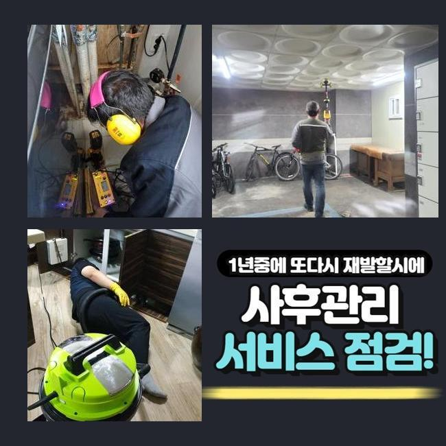
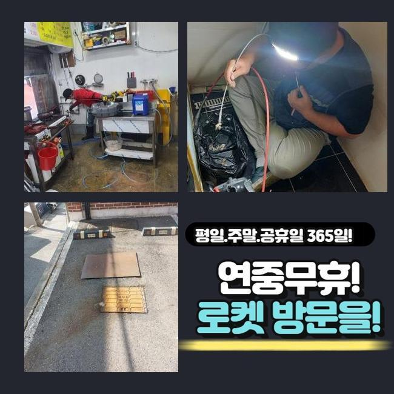
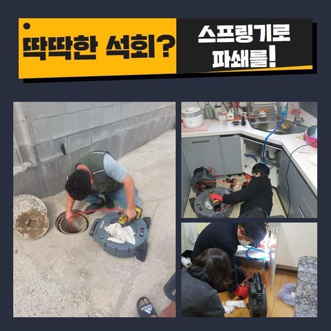
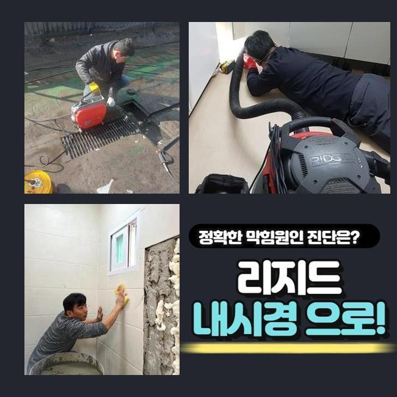
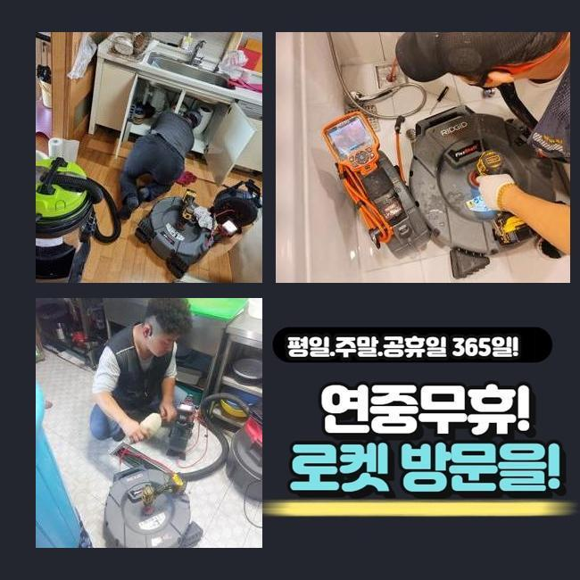
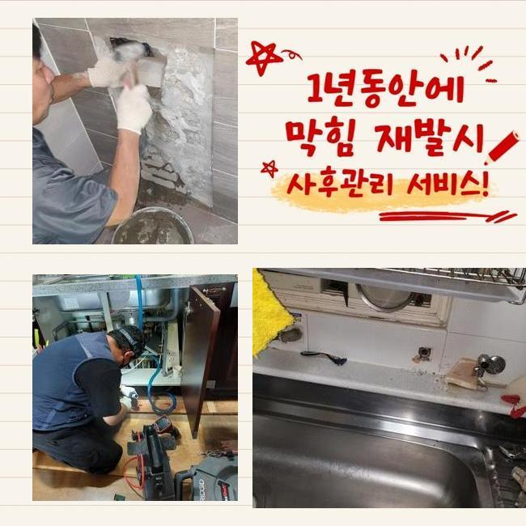

🏠 성남 금광동화장실하수구막힘 중앙동 악취차단 누수탐지
성남 중앙동 싱크대막힘 전문 시공 후기

📋 작업 개요
- 위치: 성남 중앙동, 중앙동, 성남
- 서비스 유형: 싱크대막힘, 하수구막힘, 배관막힘, 누수수리, 역류해결, 뚫는업체, 배관청소, 악취차단
- 작업 일시: 2025. 3. 23. 16:42
- 업체명: 하수구수사대 (010-5615-2118)
🔍 문제 상황
성남 금광동화장실하수구막힘 중앙동 악취차단 누수탐지
얼마전 상가내부의 씽크대에서 야기된 통수오류를 해결해드린 현장을 설명드리겠습니다
이해하기 쉽고 효용성있는 정보들이 있으니 주목해주세요!
오피스라는 현장에서 생겨난 일이다 보니 나름의 개선책으로 시정하려는 시도들이 눈에 띄었죠
전문가들은 대응방법들을 무슨 방법을 통해 이어가는지 더나아가 각 관로들을 관리하는 방안도 이해가 가능하도록 설명할게요!
고객께선 근무하실때 음식물을 취급하는 것이 아니였기에 막혀버리는 문제들이 없을것으로 여겼다고 말해주셨죠
이곳의 경우 식재료를 쓰지 않는 공간이라서 주기성을 갖춘 관리책 수행이 간과된 사례들이 많은데요
저희업체는 즉각 방문을 드려봤어요 도착하여 배수되는 모습을 관찰했습니다
구석구석 지켜보았더니 물들이 솟구치는 모습은 보이지않았으나 아주 조금씩 흐르고 있었어요
이럴땐 갑작스레 고이게되고 역류해버리는 증상들이 생겨날 확률이 다분해요

🔎 원인 분석
💡 전문가 진단: 정밀 진단 장비를 사용하여 슬러지의 고착 여부를 판명하고 타격/세척 작업을 실시했습니다.
일단은 석션기계로 일컫는 기기를 가용해 떠다니는 오수들을 빨아당겨주었습니다
석션도구는 내시경을 이용한 진단에 앞서 깨끗한 시야를 위하여 이용되고 부유하는 잔재들을 제거할때 훌륭한 기능들을 뽐내고 있어요
석션기기에 오수들이 흡입됐으나 아직도 더디게 흘러갔는데요
석션도구의 운용 이후 절차로는 내시경장치로 깊은 지점까지 확인했습니다
내시경 라인을 투입하니 기름들이 떡하니 자리잡아 배수공간이 협소하게 되었는데요
요리를 안하는 곳임에도 어떠한 원인으로 생긴거지? 의아할 수 있겠지만 사무공간에서는 주기성을 갖춘 관리들이 간과되는 사안이 많아서입니다
일단은 주전부리 및 커피찌꺼기라던지 기름성분이 엉키게되어 고착물을 만들어내요
내시경기기로 싱크대쪽을 주시하면서 샤프트장비로 기름성분을 타격하며 조금씩 배수관을 뚫어내니 물길들이 확보되며 배수라인이 넓어지게 되었습니다
기름의 경우엔 관찰할 때 불그스름한 색을 띄게되므로 청소가 이뤄지면 영상화면도 선명하게 환골탈태되는 광경을 목격하게 된답니다
스케일링을 했음에도 물이 배수구로 원활하게 안흘러가는 문제들이 남아있었습니다
그리하여 수도들을 가득 받아 한꺼번에 흐르게하니 특정한 위치에서 고이면서 막힘들이 야기되는 트러블들이 존재했습니다

🔧 작업 과정
오수들이 고임현상을 보이는건 놓치게된 요소들이 분명하다는 것을 방증하는것이죠
잔해를 비롯해 놓친 요소가 아직 있을거라는 걸 보여주는것이기에 외측라인까지 확인할 필요성들이 분명했습니다
저희전문인들은 지속적인 싱크대배수 정체의 까닭들을 파헤치기위하여 내시경기기의 줄을 엘보라인까지 투입해주었어요
마침내 발견하게 된 건 배수관의 모서리가 하단부에 매립되어 있지 못하고 외측으로 빠져나와 설치된 상태라는 점이였죠
실내부터 내시경장비로 진입시키기가 힘들어 바깥에서부터 역으로 기기들을 사용하도록 구멍들을 뚫어주고 해당 지점에 내시경 내시경케이블을 넣어주었죠
내시경기기의 줄을 투입시키니 재차 막히게된 지점을 발견했죠
오피스의 개수대에선 원래의 배수관이 연결되어 있지 못했고 다른 배수관이 외측으로 빠져나가는 상태였습니다
그 라인을 따라가보니 세면대로 빠지는 위치에 폐기물이 배수관을 막아선 모습이였습니다
주방쪽의 하수관이 아니라 전혀 다른 곳에 폐기물이 자리잡아 찾아내는데 시간들이 꽤 소요되었지만 결국 만성적인 막힘사안의 주된 까닭들을 찾아냈습니다
몇번에걸쳐 위치들을 검수하고 점검해야하는 지점의 pvc 하수도를 타공작업해주어 이물들을 배출해주었는데요
제거시키니 둥근 고무같은것이였는데 어떻게 쓰인건지 알 길이 없었으나 크기까지 상당한 수준이였고 특정 구간에 놓아진 상태면 통수되는것이 불가한 것이 당연한 물질이였죠
주방쪽의 하수관과 정체들을 발생케하는 이물질들도 없애는 단계를 완료하니 유수가 제 모습을 되찾았고 모든 과정이 완료됐죠
더불어 의뢰인분은 냄새발생에 관련해서도 물어보셨는데요 작업하면서 체크해보았는데 냄새까지 피어오르는걸 확인했죠
트랩부품에 노후되는 증상이 존재했어요 배수관부터 정리한 후 튼튼한 트랩부속으로 교체도 오차없이 해드렸습니다
최종적인 검수를 실시해보고자 탕비실공간으로 발걸음을 옮겨 씽크대에 물들을 채워서 잘 내려가는지 보았더니 처음관 다르게 답답함 없이 흐르게되었어요
해당 현장의 배수구막힘의 증상도 오차없이 수습되었어요


✅ 작업 완료
정확한 검수를 거쳐 끝끝내 문제의 까닭들을 추적하여 결국 막힌 까닭을 찾았고 시설물 이용도 한결 나아졌죠
이와같이 고객분들이 장기적으로 고생하시지않게 모든 과정을 완료했답니다
사용을 다하시고 수채구멍으로 기름성분과 음식물들이 안빠지게 유의해주셔야하고 청소과정도 정기적으로 진행해주시면 좋습니다
저희전문인들은 재발걱정을 하지않을 수 있는 작업계획에 초점들을 맞춰요 이에 저희들이 작업들을 끝내고 작업한 위치에서 재발된다면 다시 찾아뵈어 A/S서비스도 수행하고 있어요
통수가 안되는 사태가 벌어져 전문가 호출을 염두에 두고 계시면 저희전문진에게 연락하시는건 어떠실지요?



⚠️ 베란다 누수 및 방수 관리 방법
- ✅ 비가 많이 올 때 창틀 주변이나 아래층 천장에 얼룩이 생기는지 정기적으로 확인해 보세요.
- ✅ 우수관 주변 실리콘 마감이 들뜨거나 깨진 틈새가 있는지 손상 여부를 수시로 체크하세요.
- ✅ 베란다 바닥 타일의 줄눈(메지)이 소실되면 그 틈으로 물이 침투하여 누수가 유발됩니다.
- ✅ 누수 의심 증상 발견 시 방치하면 아래층 손실이 커지므로 즉시 전문가의 진단을 받으십시오.
💡 핵심 정리
- 확실한 장비 작업(내시경 점검 및 샤프트 스케일링)으로 원인을 뿌리 뽑습니다.
- 작업 후 1년 이내에 동일한 부위 재발 시 100% 무상 A/S 서비스를 보장합니다.
- 서울 · 경기 · 인천 전 지역에 24시간 언제든 긴급 출동할 수 있도록 항시 대기 중입니다.
❓ 자주 묻는 질문 (FAQ)
🚨 성남 중앙동 싱크대막힘 문제로 고민이신가요?
정확한 원인 진단과 확실한 시공으로 재발 없는 해결을 약속드립니다.
24시간 긴급 출동 | 서울 · 경기 · 인천 전지역 | 1년 내 재발 시 무상 A/S